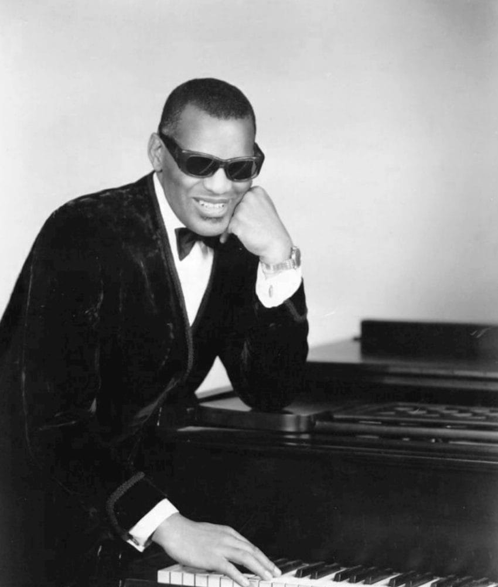

1962 music brought The Twist back to number one, more than a year after its first run.
It was the only non-holiday song to repeat that, a feat matched only by Mariah Carey in 2020.
Listen to 1962 Music
25 of 1962's biggest hits are playable below, from Billboard's year-end top 100 for 1962.
Press play on any row, or use Play All to run the whole list.
| # | Title | Artist | Chart Peak | Genre |
|---|---|---|---|---|
| Stranger on the Shore | Mr. Acker Bilk | No. 1, 1 wk | Jazz & Easy Listening | |
| I Can't Stop Loving You | Ray Charles | No. 1, 5 wks | Country (Nashville Sound) | |
| Mashed Potato Time | Dee Dee Sharp | No. 2 | Motown, Soul & R&B | |
| Roses Are Red (My Love) | Bobby Vinton | No. 1, 4 wks | Pop & Brill Building | |
| The Stripper | David Rose | No. 1, 1 wk | Jazz & Easy Listening | |
| Johnny Angel | Shelley Fabares | No. 1, 2 wks | Pop & Brill Building | |
| The Loco-Motion | Little Eva | No. 1, 1 wk | Pop & Brill Building | |
| Let Me In | The Sensations | No. 4 | Motown, Soul & R&B | |
| The Twist | Chubby Checker | No. 1, 2 wks | Pop & Brill Building | |
| Soldier Boy | The Shirelles | No. 1, 3 wks | Pop & Brill Building | |
| Hey! Baby | Bruce Channel | No. 1, 3 wks | Pop & Brill Building | |
| The Wanderer | Dion | No. 2 | Pop & Brill Building | |
| Duke of Earl | Gene Chandler | No. 1, 3 wks | Motown, Soul & R&B | |
| Palisades Park | Freddy Cannon | No. 3 | Pop & Brill Building | |
| Breaking Up Is Hard to Do | Neil Sedaka | No. 1, 2 wks | Pop & Brill Building | |
| Wolverton Mountain | Claude King | No. 6 Pop, No. 1 Country | Country (Nashville Sound) | |
| Slow Twistin' | Chubby Checker and Dee Dee Sharp | No. 3 | Pop & Brill Building | |
| It Keeps Right On a-Hurtin' | Johnny Tillotson | No. 3 | Country (Nashville Sound) | |
| The One Who Really Loves You | Mary Wells | No. 8 | Motown, Soul & R&B | |
| Good Luck Charm | Elvis Presley | No. 1, 2 wks | Pop & Brill Building | |
| Midnight in Moscow | Kenny Ball and His Jazzmen | No. 2 | Jazz & Easy Listening | |
| Sheila | Tommy Roe | No. 1, 2 wks | Pop & Brill Building | |
| Twistin' the Night Away | Sam Cooke | No. 9 Pop, No. 1 R&B | Motown, Soul & R&B | |
| The Wah-Watusi | The Orlons | No. 2 | Motown, Soul & R&B | |
| Peppermint Twist | Joey Dee and the Starliters | No. 1, 3 wks | Pop & Brill Building |

Table of Contents
- Listen to 1962 Music
- 1962 Music's Billboard Hot 100 Number Ones
- Key Albums Released in 1962
- Notable Events in 1962
- Genre Shifts in 1962 Music
- Play 1962 on the Radio Dial
- FAQ
1962 Music's Billboard Hot 100 Number Ones
Twenty-one different singles topped the Billboard Hot 100 during 1962, counting one holdover from 1961.
Three songs tied for the longest run, five weeks each.
Ray Charles's I Can't Stop Loving You led in June.
The Four Seasons' Sherry and Big Girls Don't Cry each matched it later that year.
The chart closed on The Tornados' instrumental Telstar, which carried into 1963.
| Title | Artist | Chart | Peak Date | Weeks at #1 |
|---|---|---|---|---|
| The Lion Sleeps Tonight | The Tokens | Billboard Hot 100 | Jan 6, 1962 | 1 (holdover from 1961) |
| The Twist | Chubby Checker | Billboard Hot 100 | Jan 13, 1962 | 2 |
| Peppermint Twist | Joey Dee and the Starliters | Billboard Hot 100 | Jan 27, 1962 | 3 |
| Duke of Earl | Gene Chandler | Billboard Hot 100 | Feb 17, 1962 | 3 |
| Hey! Baby | Bruce Channel | Billboard Hot 100 | Mar 10, 1962 | 3 |
| Don't Break the Heart That Loves You | Connie Francis | Billboard Hot 100 | Mar 31, 1962 | 1 |
| Johnny Angel | Shelley Fabares | Billboard Hot 100 | Apr 7, 1962 | 2 |
| Good Luck Charm | Elvis Presley | Billboard Hot 100 | Apr 21, 1962 | 2 |
| Soldier Boy | The Shirelles | Billboard Hot 100 | May 5, 1962 | 3 |
| Stranger on the Shore | Mr. Acker Bilk | Billboard Hot 100 | May 26, 1962 | 1 |
| I Can't Stop Loving You | Ray Charles | Billboard Hot 100 | Jun 2, 1962 | 5 |
| The Stripper | David Rose | Billboard Hot 100 | Jul 7, 1962 | 1 |
| Roses Are Red (My Love) | Bobby Vinton | Billboard Hot 100 | Jul 14, 1962 | 4 |
| Breaking Up Is Hard to Do | Neil Sedaka | Billboard Hot 100 | Aug 11, 1962 | 2 |
| The Loco-Motion | Little Eva | Billboard Hot 100 | Aug 25, 1962 | 1 |
| Sheila | Tommy Roe | Billboard Hot 100 | Sep 1, 1962 | 2 |
| Sherry | The Four Seasons | Billboard Hot 100 | Sep 15, 1962 | 5 |
| Monster Mash | Bobby "Boris" Pickett and the Crypt-Kickers | Billboard Hot 100 | Oct 20, 1962 | 2 |
| He's a Rebel | The Crystals | Billboard Hot 100 | Nov 3, 1962 | 2 |
| Big Girls Don't Cry | The Four Seasons | Billboard Hot 100 | Nov 17, 1962 | 5 |
| Telstar | The Tornados | Billboard Hot 100 | Dec 22, 1962 | 2 (continued into 1963) |
The Twist Makes Chart History Twice
No 1962 chart story topped The Twist's second trip to number one.
Chubby Checker had already ridden his cover of Hank Ballard's song to the top in September 1960.
It returned on January 13, 1962, fueled by a dance craze revival at clubs like New York's Peppermint Lounge.
No other non-holiday song repeated that trick until Mariah Carey matched it in 2020.
Key Albums Released in 1962
Album releases in 1962 leaned toward genre-crossing experiments and the folk revival more than straight rock and roll.
- Modern Sounds in Country and Western Music, Ray Charles (ABC-Paramount Records, released March 1962): country standards in Charles's own R&B and pop style, built around I Can't Stop Loving You.
- Peter, Paul and Mary, Peter, Paul and Mary (Warner Bros. Records, released March 1962): the folk trio's self-titled debut, a number one album that helped carry folk into the pop mainstream.
- Surfin' Safari, The Beach Boys (Capitol Records, released October 1, 1962): the group's debut LP, introducing Brian, Carl and Dennis Wilson, Mike Love and David Marks nationally.
Ray Charles Crosses Into Nashville
Modern Sounds in Country and Western Music was a risk few expected to pay off.
Charles was an established R&B and jazz star, not a country singer.
His label worried the album would confuse his audience.
Instead it became a career peak, spinning off four hit singles.
It pulled country songwriting onto pop and R&B radio.
Notable Events in 1962
Beyond the chart, two 1962 sessions still shape how the year gets remembered.
- The Four Seasons scored their first number one when Sherry topped the Hot 100 on September 15, 1962. Read more on September 15
- The Beach Boys released their debut album Surfin' Safari on October 1, 1962, introducing the group's harmonies to a national audience. Read more on October 1
Genre Shifts in 1962 Music
Ray Charles's Nashville crossover did more than sell records.
It showed pop and R&B audiences that Nashville Sound country could share a radio dial with rock and roll.
Motown had its own breakthrough star that year in Mary Wells.
Her single The One Who Really Loves You put Motown and soul back on the chart.
It came less than a year after the label's first number one.
Dance Crazes Dominate Pop
The Twist, The Loco-Motion, Mashed Potato Time and Peppermint Twist all landed in the year-end top ten.
Dance instructions sold as well as love songs in 1962.
Cameo-Parkway and other Brill Building-era pop labels built entire careers around the trend.
Three of the year's biggest hits were instrumentals: Stranger on the Shore, The Stripper and Midnight in Moscow.
They kept jazz and easy listening in the conversation too.
On the West Coast, the Beach Boys' debut album pointed toward a sound radio had not caught onto yet.
Surfin' Safari was still a regional record in October 1962.
It planted the garage and surf rock scene that broke nationally within two years.
Play 1962 on the Radio Dial
Hear 1962 music the way listeners did, back to back and unscripted.
The site's own Play 1962 on the Radio Dial tunes every station to songs from this year alone.
FAQ
What was the number one song of 1962?
Three singles tied for the longest run at number one in 1962, five weeks each.
Ray Charles's I Can't Stop Loving You held the top spot that long.
So did the Four Seasons' Sherry and Big Girls Don't Cry.
What song returned to number one in 1962 after already topping the chart in 1960?
Chubby Checker's The Twist returned to number one on January 13, 1962.
That was more than a year after its first run.
It remains the only non-Christmas song to top the Hot 100 twice, a feat Mariah Carey matched in 2020.
What was Ray Charles's Modern Sounds in Country and Western Music?
It was Ray Charles's 1962 album of country songs recast in his own R&B and pop style.
Led by the single I Can't Stop Loving You, it became his first number one album on Billboard's chart.
What were the Four Seasons' first two number one hits?
Sherry and Big Girls Don't Cry, released back to back in 1962.
They made the Four Seasons the first rock act to top the chart with their first two singles.
What kind of music was popular in 1962?
1962 mixed Twist-era dance crazes with teen idol pop, doo wop and girl group records.
Nashville Sound country and Ray Charles's crossover between R&B and country both shared the chart too.
1962 turned out to be a year of crossovers.
Ray Charles carried R&B into Nashville.
The Four Seasons opened their career with two number ones in a row.
A dance craze topped the chart twice.
Hear more of the decade in the best 60s songs list.
Explore how those threads played out across the whole decade on the 1960smusic.net homepage.
It is the best place to dig deeper into 1962 music.